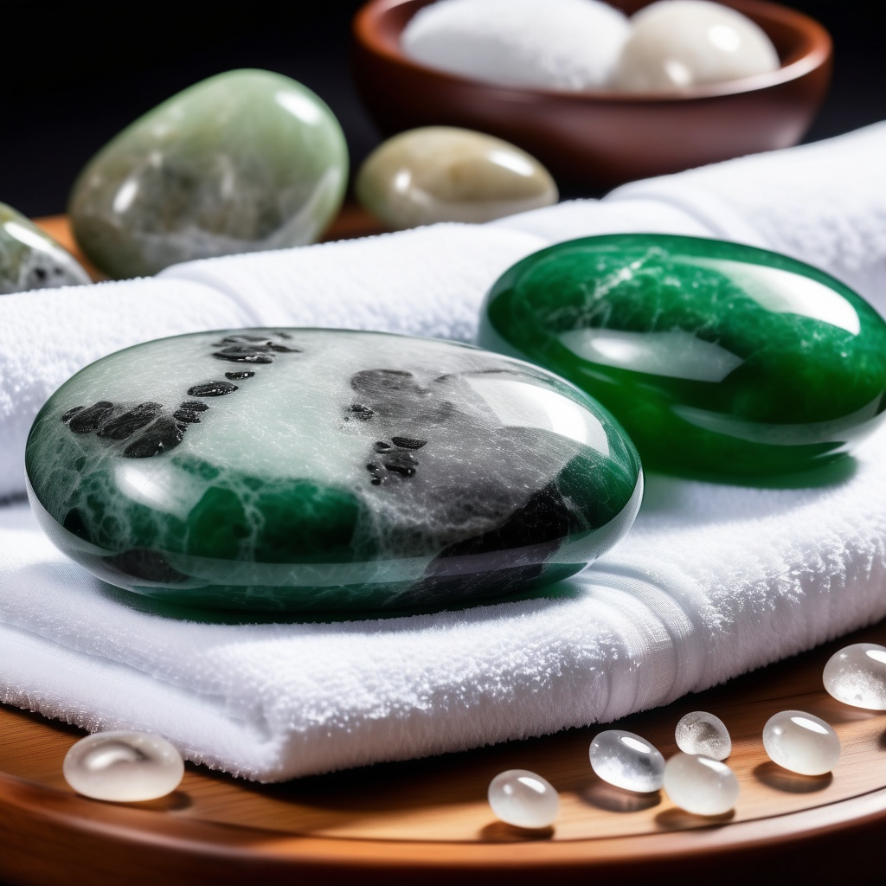

Modern Relaxation meets Ancient Healing
Hot and Cold Fascia Massage is a treatment designed to improve the health and mobility of your fascia. This connective tissue surrounds and supports muscles, joints and organs. This treatment uses alternating warm and cool jade stones to stimulate circulation, reduce inflammation and encourage restricted fascia to soften and glide more freely. The heat allows the tissue to relax and become more pliable, making it easier to work through deeper restrictions. The cooling application helps calm irritation, support recovery and reduce residual inflammation.
Relaxation isn't your typical relaxation massage with routine strokes and predictable techniques. This is a muscle reset. Designed to release the deep tension your body has been holding onto for months, this treatment works beyond surface-level relaxation. It combines slow, intentional pressure with targeted muscle work to help unwind chronic tightness and calm an overactive nervous system. You won't just leave feeling relaxed — you'll feel lighter, freer and noticeably more mobile in the days that follow.
Both these techniques work to release tension, improve circulation, and promote a profound sense of mobility and relaxation that extends throughout your entire being.

Perfect length for deep relaxation without being overwhelming
New clients
$140Returning clients
$120Mobile service to Sunshine Coast or visit me at Forward Health, Currimundi
All equipment provided - you just need to relax
For both Hot and Cold Fascia & Relaxation Massage, you will be asked to undress down to your underwear. Your dignity is maintained at all times with professional draping, and only the area being treated will be exposed. Sessions are tailored to your body on the day.
Arrive well hydrated and avoid heavy meals immediately before your appointment. It's helpful to have a quick idea of any areas of tightness, pain or restriction you'd like addressed.
Heated crystals are placed on key pressure points and periodically used to massage your body, aiding in fascia release and the relaxation process
Specialised massage techniques are used in combination with hot and cold crystals to release tension in the muscles, ligaments and the fascia
Gentle finishing techniques and time to rest as your body integrates.
Experience the healing power of massage and modern science tailored to your own healing journey and comfort
Call to Book Email Enquiry